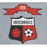
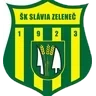
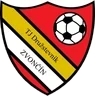

U15 starší žiaci
IV. liga starších žiakov ObFZ Trnava · 10. miesto z 10

- 0výhier
- 0remíz
- 13prehier
- 7:149skóre
Program
-
21. 3.ne · 12:30
Match dayFK Voderadyvonku · 14. kolo

-
28. 3.ne · 12:30
Match dayTJ Iskra - Horné Orešanydoma · 15. kolo

-
4. 4.ne · 13:00
Match dayOŠK Zavarvonku · 16. kolo

- 11. 4.ne · 13:00 Match daySFC Kopánkavonku · 17. kolo
-
18. 4.ne · 13:30
Match dayŠK RAPID Hrnčiarovce nad Parnoudoma · 18. kolo

Výsledky
-
Fulltime
Prehra, 15:1
 FK Biely Kostol
14. 11. · vonku · 12. kolo
FK Biely Kostol
14. 11. · vonku · 12. kolo
-
Fulltime
Prehra, 1:3
 OŠK Ružindol
8. 11. · doma · 13. kolo
OŠK Ružindol
8. 11. · doma · 13. kolo
-
Fulltime
Prehra, 1:5

ŠK Slávia Zeleneč 25. 10. · doma · 11. kolo -
Fulltime
Prehra, 16:0

TJ Družstevník Zvončín 17. 10. · vonku · 10. kolo - Fulltime Prehra, 18:0 ŠK RAPID Hrnčiarovce nad Parnou 11. 10. · vonku · 9. kolo
- Fulltime Prehra, 0:4 SFC Kopánka 4. 10. · doma · 8. kolo
-
Fulltime
Prehra, 1:17
OŠK Zavar
27. 9. · doma · 7. kolo
-
Fulltime
Prehra, 12:0
TJ Iskra - Horné Orešany
20. 9. · vonku · 6. kolo
- Fulltime Prehra, 9:0 ŠK Slávia Zeleneč 15. 9. · vonku · 2. kolo
-
Fulltime
Prehra, 1:18
FK Voderady
13. 9. · doma · 5. kolo
-
Fulltime
Prehra, 8:2
OŠK Ružindol
6. 9. · vonku · 4. kolo
- Fulltime Prehra, 0:8 TJ Družstevník Zvončín 1. 9. · doma · 1. kolo
-
Fulltime
Prehra, 0:16
FK Biely Kostol
30. 8. · doma · 3. kolo
Tabuľka
IV. liga starších žiakov ObFZ Trnava
| Poradie | Tím | Z | V | R | P | Skóre | B |
|---|---|---|---|---|---|---|---|
| 1 | 13 | 12 | 1 | 0 | 83:7 | 37 | |
| 2 | 13 | 10 | 1 | 2 | 63:13 | 31 | |
| 3 | 13 | 8 | 1 | 4 | 44:33 | 25 | |
| 4 | ŠK RAPID Hrnčiarovce nad Parnou | 13 | 7 | 3 | 3 | 42:10 | 24 |
| 5 | 13 | 6 | 0 | 7 | 44:33 | 18 | |
| 6 | SFC Kopánka | 13 | 5 | 1 | 7 | 24:37 | 16 |
| 7 | 13 | 5 | 0 | 8 | 23:29 | 15 | |
| 8 | TJ Družstevník Zvončín | 13 | 4 | 1 | 8 | 46:50 | 13 |
| 9 | ŠK Slávia Zeleneč | 13 | 3 | 2 | 8 | 26:41 | 11 |
| 10 | 13 | 0 | 0 | 13 | 7:149 | 0 |
Súpiska
Hráči, ktorí v roku 2026 nastúpili alebo boli v nominácii (Sportnet). Pri mládeži uvádzame len mená.
Brankári
- Dominik Vlček, číslo 1
Obrancovia
- Dávid Černý, číslo 20
- Adam Danišovič, číslo 5
- Sebastián Dekan, číslo 12
- Dominik Korniet, číslo 21
- Ľubomír Moskáľ
- Alex Simon Sprušanský
- Theo Zajíček
Stredopoliari
- Ema Belobradová
- Michal Daniš
- Filip Fuzák
- Dominik Fuzák, číslo 3
- Jakub Hubinský
- Dávid Kočiský, číslo 16
- Nikolas Krajčovič
- Max Královič
- Simon Mikulka
- Adam Opálek, číslo 19
- Michal Tomko
- Andrej Vlček
Útočníci
- Dušan Jurkovič
- Patrik Krajčovič
- Miroslav Lutišan, číslo 2
- Viktoria Petrovičová, číslo 18
- Sofia Petrovičová
Realizačný tím
- TrénerMarek Daniš
- Vedúci mužstvaDušan Mikulka
- Vedúci mužstvaPeter Zajíček
- LekárRastislav Nemček